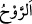

kesmeyin.
Asmaî’den nakledildiğine göre “  (rahmet)”, insanın karşılaştığı ve sayesinde
sükûnete erdiği güzel rüzgardır. R-v-h harflerinden oluşan kelimeler bir hareket ve
sarsılma mânâsı ifade eder. Bu bakımdan insanın zevk duyup varlığı sebebiyle rahatlık
hissettiği her şey ravhtır.”
el-Kevâşî’de der ki: “Ravh’ın asıl mânâsı, gönlün duyduğu tasadan kurtulup rahata
ermesidir. O zaman bu cümlenin mânâsı şöyle olmuş olur: “Allah’tan size gelecek o
gönül huzurundan ümid kesmeyin.”
“Ravh” kelimesi “ruh” şeklinde de okunmuştur. Bu takdirde mânâ: “Allah’ın kullara
hayat bahşeden rahmetinden ümid kesmeyin.” olur.
“Çünkü” Allah’ı ve sıfatlarını tanımadıkları için, “kâfirler topluluğundan başkası
Allah’ın rahmetinden ümid kesmez.”
Ârif ise “Elbette zorluğun yanında bir kolaylık vardır.” (el-İnşirah, 94/6) âyetini
göz önünde bulundurur. Hiçbir durumda, yani hem rahat hem de darlık hallerinde
Allah’tan ümid kesmez. Allah’ın yaptığı hayret vericidir, çıkış yolu açması da
yakındır.”
Bir hadiste şöyle buyrulur: “Allah’tan ümit kesmeyen günahkâr, ümit kesen âbidden
Allah’a daha yakındır.”[82]
Rivâyete göre adamın biri vefat etti. Allah Teâlâ Mûsa (a.s.)’ a: “Benim dostlarımdan
biri vefat etti. Git de onu yıka.” diye vahyetti. Mûsa (a.s.) oraya gittiğinde mezkûr
adamın insanlar tarafından fâsık olduğu için bir mezbeleye atılmış olduğunu görerek:
“Ya Rab, insanların bunun hakkında söylediklerini elbette duyuyorsun.” dedi.
Allah Teâlâ şöyle buyurdu:
Ey Mûsa! Bu adam ölürken üç şey ile şefâat talebinde bulundu. Bütün günahkârlar
benden bunlar aracılığıyla talebde bulunmuş olsalar hepsini bağışlarım.
Bunların birincisi şu sözüdür: “Ya Rab! Biliyorsun ki ben her ne kadar şeytanın ve
kötü arkadaşın tesiriyle günahlar işledimse de kalben onları kerih görürdüm.”
İkinci sözü şudur: “Her ne kadar ben işlediğim mâsıyetler yüzünden fâsıklarla birlikte
bulunuyor idiysem de bana sâlihlerle oturmak daha sevimli gelirdi.”
Üçüncü sözü ise şudur: “Bana bir sâlih bir de günahkâr geldiğinde, ben sâlihin
ihtiyacını gidermeye çalışırdım.”
Vehb b. Münebbih’in rivâyetine göre bu adam şöyle devam etmiş: “Şâyed beni
affedecek olursan, nebî ve velîlerin sevinecek, düşmanın şeytan ise üzülecek. Ama bana
azâb edecek olursan bunun tam aksi olacak. Hiç şüphesiz dostlarının sevinmesi, sana
göre düşmanlarının sevinmesinden daha hayırlıdır. O halde beni affet, bağışla!”
Bunun üzerine Allah Teâlâ şöyle buyurur: